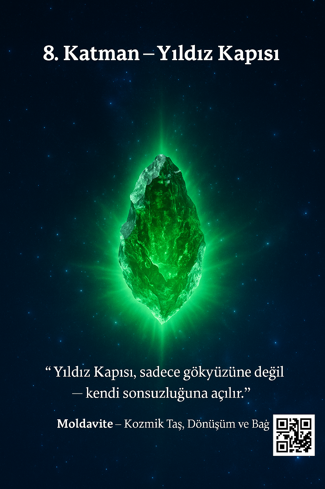

Kalbimin yıldızından bir kapı açılır.
Kozmik rezonansla titreşir; hatırlayışın ışığı içimden dışarı taşar.
İçimde gök, dışımda merkez olur — “Ben ve Bir” tek nefeste buluşur.
Spiral’in Sekizinci Taşı — Yıldız Kapısı
Sesli Fısıltı
Bu katman, yalnızca görülmek için değil — hissetmek için açıldı. Yıldız hatırlayışına hoş geldin.